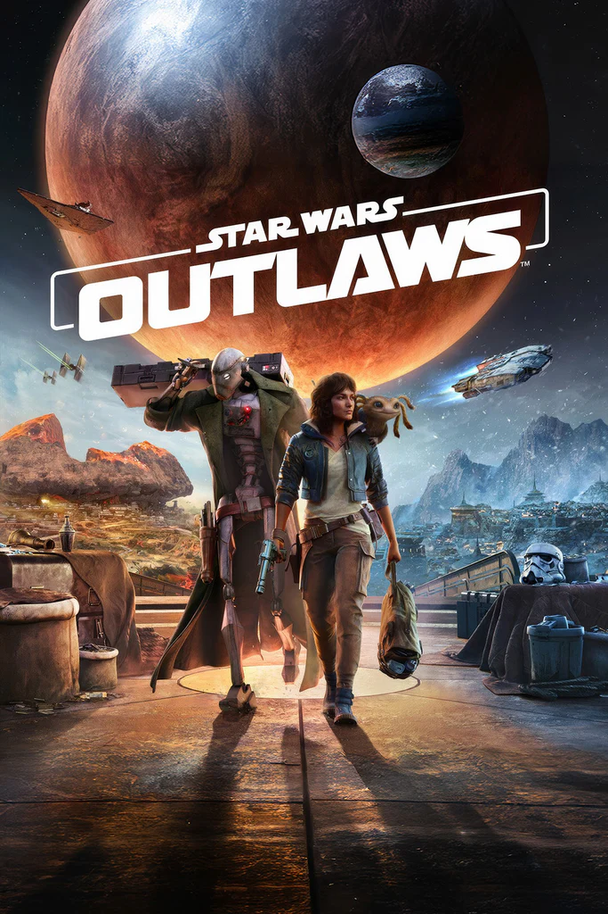
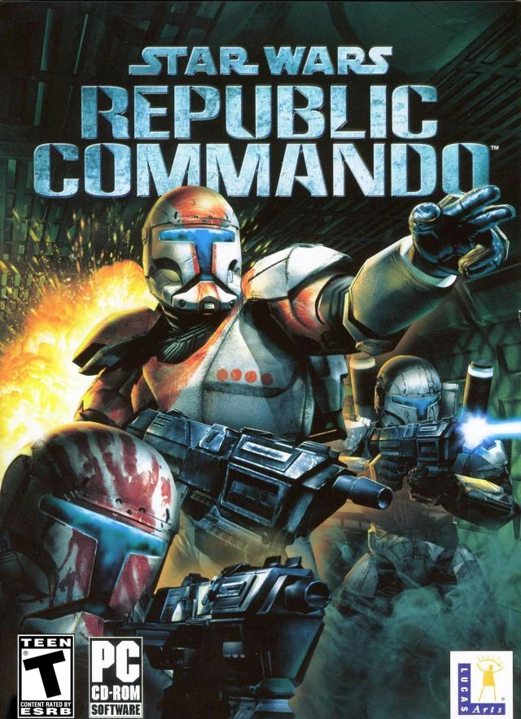
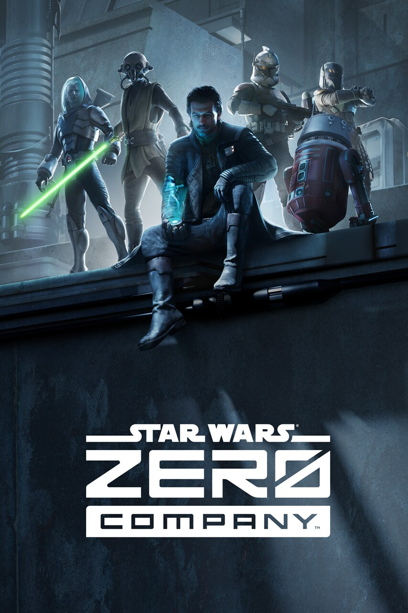
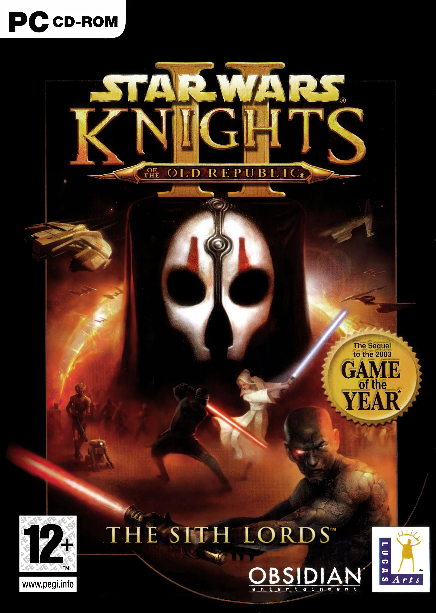

Outlaws

Mientras el Imperio Galáctico busca sin descanso la forma de acabar de una vez por todas con la Alianza Rebelde, los bajos fondos del mundo criminal bullen de actividad. Los fans se pondrán en la piel de la astuta delincuente Kay Vess, a quien acompaña su leal Nix, para dar uno de los mayores golpes que haya visto el Borde Exterior. Buscando la forma de comenzar una nueva vida, los jugadores se unirán a Kay y Nix mientras luchan, roban y se abren camino a través de sindicatos criminales, convirtiéndose en las personas más buscadas de la galaxia
Republic Commando

Star Wars: Republic Commando sigue la historia del 'Escuadrón Delta', un grupo de elite de comandos clon, a través de tres misiones durante las Guerras Clon. Formados en escuadrones de cuatro por mercenarios mandalorianos como Walon Vau y Kal Skirata, los comandos son más capaces que sus hermanos clones en rango y combate, después de haber recibido una formación con fuego real en lugar de meras simulaciones computarizadas. Todos los comandos clon eran competentes con una gran variedad de armas, sistemas informáticos y equipos de demolición.
Zero Company

Dirige a un escuadrón de élite a lo largo de una auténtica y apasionante historia ambientada en el escenario de las Guerras Clon. Ponte en la piel de Hawks, un antiguo oficial de la República que lidera la Compañía Cero, un grupo poco convencional de mercenarios de todas partes de la galaxia.
Knights of the Old Republic

KOTOR es un videojuego de rol ambientado 4,000 años antes del Imperio Galáctico, en una época de guerras entre la República y los Sith. El jugador asume el papel de un soldado de la República con amnesia, quien se une a la lucha contra el Lord Sith Darth Malak, antiguo aprendiz de Revan. A lo largo de la historia, el jugador explora varios planetas, interactúa con personajes memorables y toma decisiones que definen su camino hacia el lado luminoso o el lado oscuro de la Fuerza.
Knights of the Old Republic II

En Star Wars: Caballeros de la Antigua República II: Los Señores Sith, la galaxia se encuentra en un estado crítico. La Orden Jedi ha sido diezmada por los Sith, y la República está al borde del colapso. El protagonista, un Caballero Jedi exiliado, debe reconectar con la Fuerza y decidir su camino hacia el lado luminoso o el lado oscuro, influenciando el destino de la galaxia y de sus compañeros.